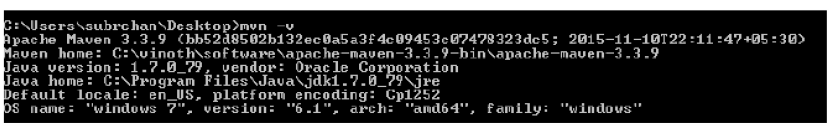
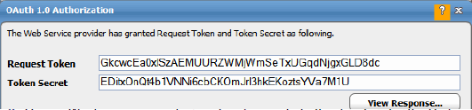

Installing Hadoop client libraries
Hadoop client libraries are required for processing the Hadoop-related DataMover, Hive, MapReduce, and Sqoop jobs. As of TA 6.5.5, Hadoop libraries are not included with TA . Instead, we provide a Maven script (POM.xml) to install the required libraries.
If you do not already have Maven, you must download and install it. Obtain the POM.xml file from the folder/directory named Hadoop on the CD and run the file script to download the required Hadoop client libraries. Instructions for obtaining Maven and downloading the Hadoop libraries are included in these sections:
Note
This section includes instructions for intalling Hadoop client libraries on Windows.
Installing Maven
Before installing Maven, your system must meet the following prerquisites:
- JDK must be installed.
- The JAVA_HOME environment variable must be set and point to your JDK.
To download and install Maven:
- Download Maven 3 or above from https://maven.apache.org/download.cgi.
- Unzip apache-maven-<3-or-above>-bin.zip.
- Add the bin directory of the created directory (for example, apache-maven-3.3.9) to the PATH environment variable.
-
Confirm a successful Maven installation by running the mvn -v command in a new shell. The result should look similar to the following:

Downloading the Hadoop client library
With Maven installed, you can now download the Hadoop client library. Maven scripts (POM.xml) are provided for the following distributions of Hadoop.
| Hadoop Distribution Type | Versions |
|---|---|
| Cloudera | CDH5 |
| Hortonworks | HDP 2.4.x |
| MapR | 5.1.0 |
Note
The Tidal Automation Compatibility Matrix contains the most current version information.
To download and install the Hadoop client library:
- Download the POM.zip file. This file is provided in the /Hadoop directory in the TA 6.5.6 distribution package.
-
Unzip the POM.zip file.
The POM xml files needed by Maven are saved in the directory structure as shown:

-
Open a Windows command prompt and navigate to the directory for the Hadoop distribution in which you are interested. For example, navigate to the CDH directory if you want to download Hadoop client libraries for Cloudera.
-
Edit the POM.xml file to mention exact versions of MapR, Hadoop, Hive, and Sqoop that you are using. For example, for Cloudera the required properties could be edited as shown below:
<properties> <Hadoop.version>2.6.0-cdh5.6.0</Hadoop.version> <Hive.version>1.1.0-cdh5.7.0</Hive.version> <Sqoop.version>1.4.6-cdh5.6.0</Sqoop.version> </properties>For MapR, you must also include the version of MapR used, as shown in the following example:
<properties> <Hadoop.version>2.7.0-mapr-1602</Hadoop.version> <Hive.version>1.2.0-mapr-1605</Hive.version> <Sqoop.version>1.4.6-mapr-1601</Sqoop.version> <Mapr.version>5.1.0-mapr</Mapr.version> </properties> -
From the directory containing the Hadoop distribution you want, execute this command:
mvn dependency:copy-dependencies -DoutputDirectory=<jar-download-directory>For example, running the following command from the CDH directory:
mvn dependency:copy-dependencies -DoutputDirectory=C:\CDHlibwould insert the Cloudera Hadoop client libraries to the C:\CDHlib directory.